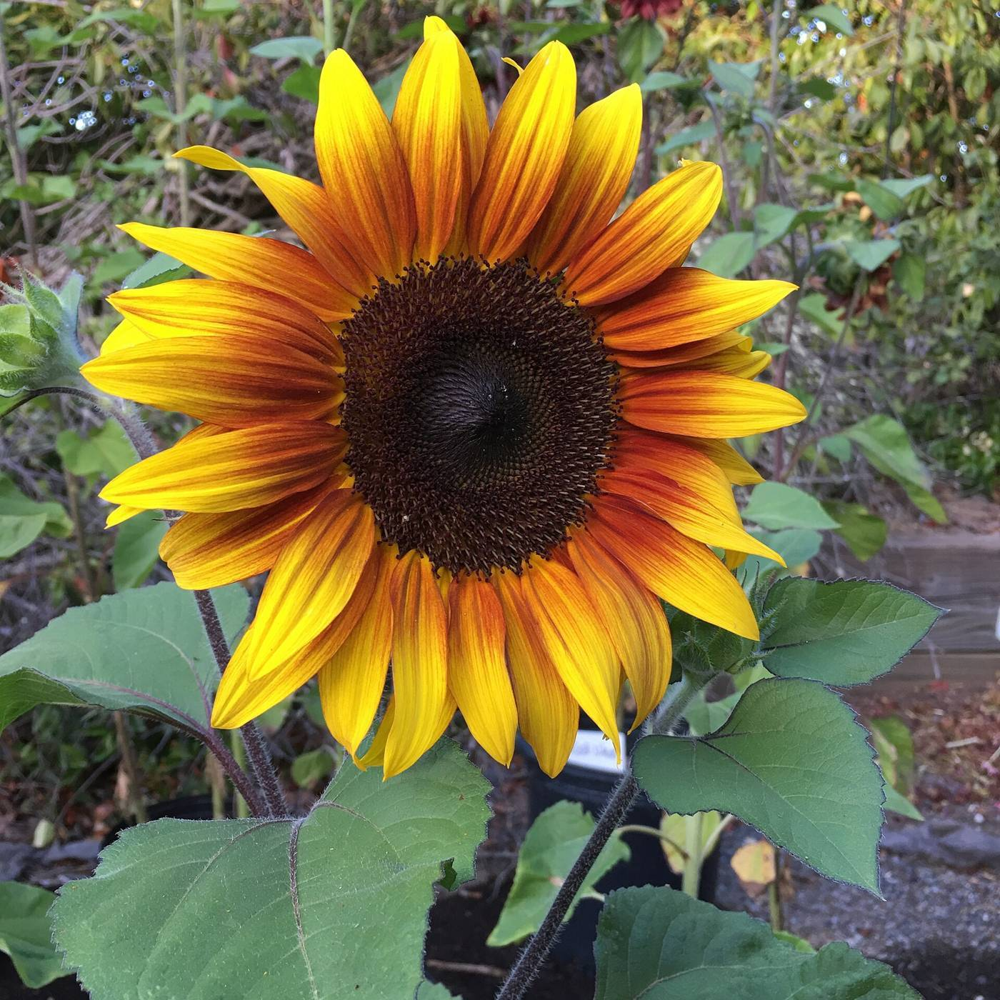
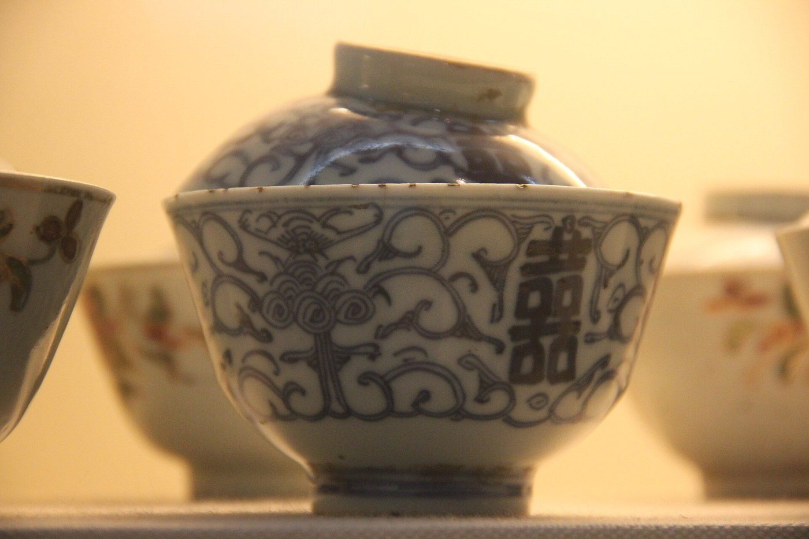
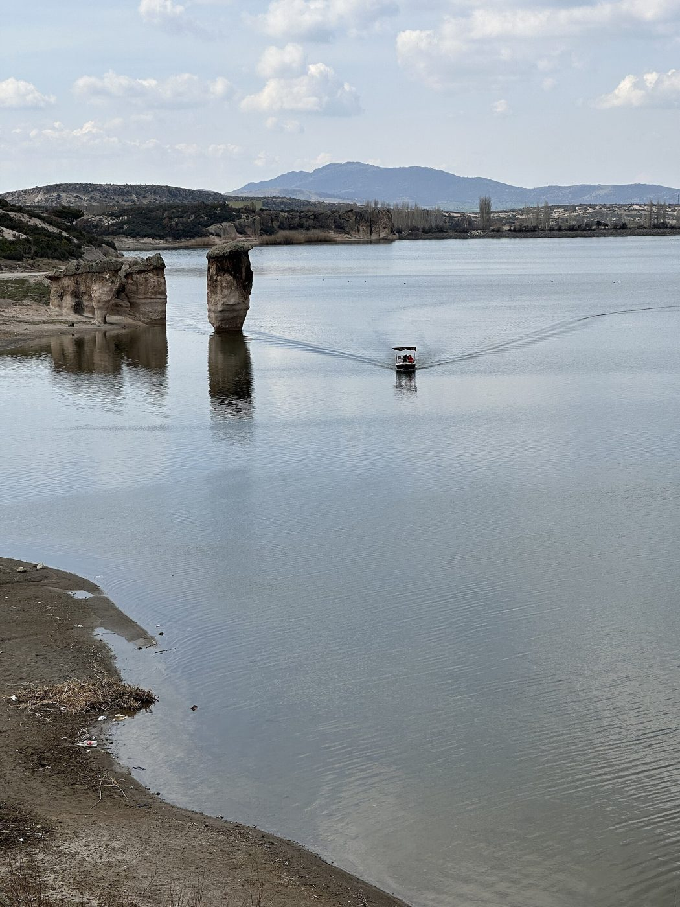

制作側の連想
電気蚊取り器の部位を、配置図にしてみる
電気蚊取り器(液体を温めて使う家庭用の小さな器具)の部位を図にしたもので、制作側の連想です。お店の理念・由来とは無関係で、実際の製品の仕様を示すものでもありません。六つの部位に番号をふり、上の図と並べています。
凡例
六つの部位
- 1プラグ(差し込み刃)本体の背面から出ている二本の平たい金属の板。壁のコンセントに差し込む側にあたる部分。
- 2本体ケースプラグから下へ、四角くふくらむ樹脂の箱。内側の部品を包んで、全体の形をつくる。
- 3薬液ボトル本体の下にはまる、首の細い小びん。中に液体をためておく入れ物。
- 4吸液芯(ウィック)ボトルの中から細い棒のように立ちあがる芯。液体を、すこしずつ上へ運ぶ役目。
- 5加熱部ケースの下から突き出た短い筒。芯の先を、やわらかく温める位置にある。
- 6通気口(スリット)ケースの前面にあいた縦の細い切れ込み。熱をこもらせないための抜け道。
写真(イメージ)
写真(イメージ)




写真はイメージです。お店のものではありません。